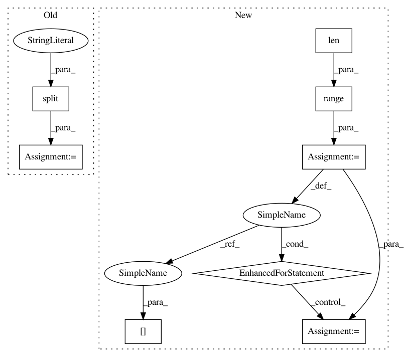

d5caf230ff50260c1a6565db35edeeddd5d407e6,build/boilerplate/boilerplate.py,,get_refs,#,34
Before Change
def get_refs():
refs = {}
for path in glob.glob(os.path.join(rootdir, "build/boilerplate/boilerplate.*.txt")):
extension = os.path.basename(path).split(".")[1]
ref_file = open(path, "r")
ref = ref_file.read().splitlines()
ref_file.close()
After Change
prefix = "//"
else:
prefix = "//"
for i in range(len(refs[extension])):
if len(refs[extension][i]) != 0:
p = prefix + " "
else:
p = prefix
refs[extension][i] = p + refs[extension][i]
return refs
def file_passes(filename, refs, regexs):
try:
In pattern: SUPERPATTERN
Frequency: 3
Non-data size: 8
Instances
Project Name: kubeflow/kubeflow
Commit Name: d5caf230ff50260c1a6565db35edeeddd5d407e6
Time: 2018-02-08
Author: mitake.hitoshi@gmail.com
File Name: build/boilerplate/boilerplate.py
Class Name:
Method Name: get_refs
Project Name: tensorflow/datasets
Commit Name: 54fcd2ff42dd995f45dfb9e9aa943bc438f020ab
Time: 2019-03-12
Author: sjana646@gmail.com
File Name: tensorflow_datasets/image/ham10000.py
Class Name: Ham10000
Method Name: _generate_examples
Project Name: Microsoft/MMdnn
Commit Name: d4c29b1566cf9dcd6dec5b78fd9361f03a954e39
Time: 2018-07-02
Author: 874169101@qq.com
File Name: mmdnn/conversion/tensorflow/tensorflow_frozenparser.py
Class Name: TensorflowParser2
Method Name: __init__
Project Name: kubeflow/kubeflow
Commit Name: d5caf230ff50260c1a6565db35edeeddd5d407e6
Time: 2018-02-08
Author: mitake.hitoshi@gmail.com
File Name: build/boilerplate/boilerplate.py
Class Name:
Method Name: get_refs